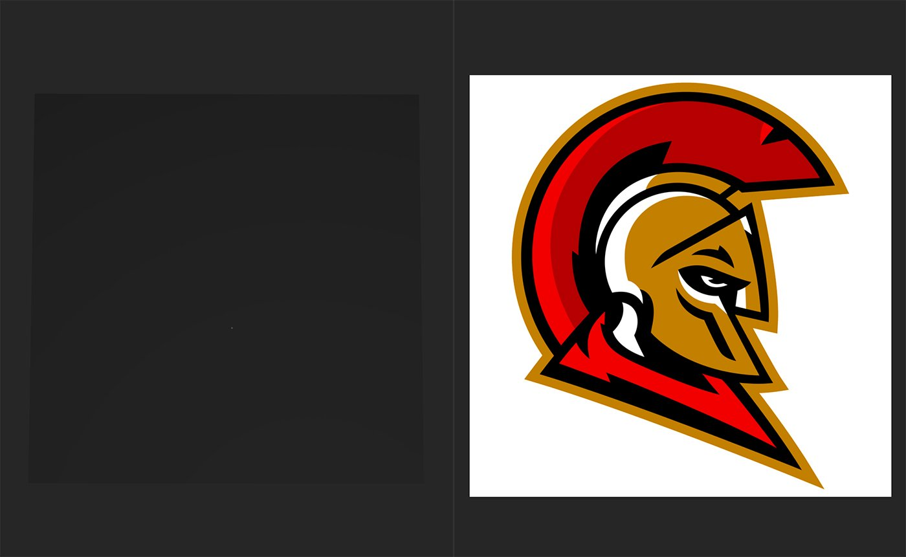
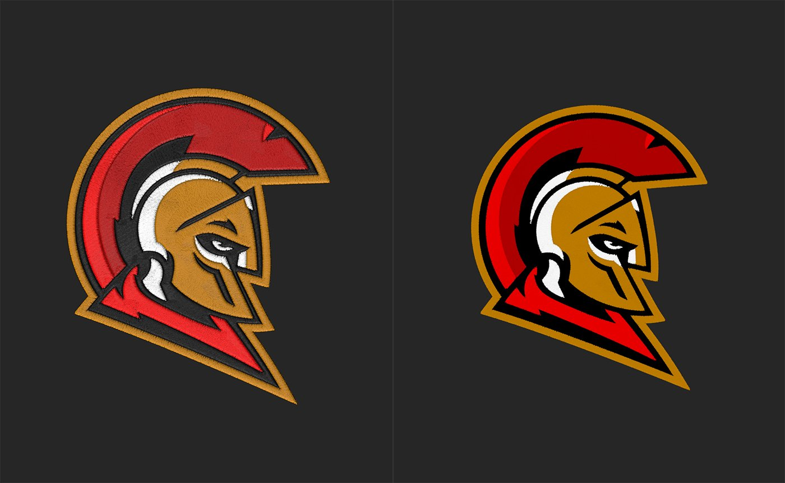

In: Generators
The Embroidery filter allows you to quickly convert images into embroidered patches. You can customize the patches appearance, and use the color management tools to act as a mask for multiple materials.
The images below shows the Embroidery filter in action.

In the image above, the source image has been imported. Note that the image is opaque and has a white background.

In the image above, the Embroidery filter has been added to the layer stack and has converted the source image into an embroidered patch. Note that while the source image was opaque, the output of the Embroidery filter has transparency.
Interested in trying out the Tajima embroidery plugin?
Learn more about it here.
Basic Parameters
Color 1
Use the controls to adjust each color zone individually.
Stitch Finish
Advanced
The Embroidery filter can be a little confusing at first, but with just a few important parameters to get started you'll be adding patches to your materials in no time.
If you've used the Weave filter before, the Embroidery filter works in a similar way.
To use the Embroidery filter:
It's possible to use transparent images in the Embroidery filter, but by default these will also impact the opacity map of your material - transparent parts of the image will make the material transparent too. To create a patch with the Embroidery filter and have it sit on top of the layers below it, use the Decal filter.
The Decal layer converts the Embroidery input into a Decal - so the Embroidery layer's transparency tells the decal layer how to mask out the Embroidered pattern. With the Decal layer you can also move the pattern around on your material or enable functionality like tiling.